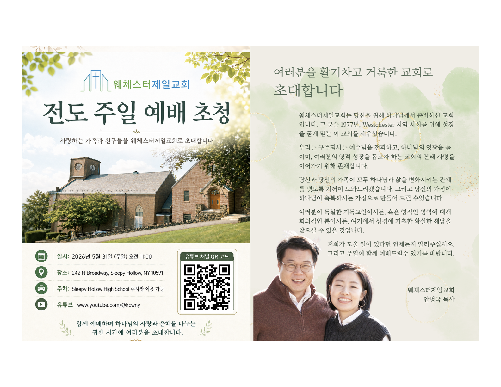

"너희는 먼저 그의 나라와 그의 의를 구하라
그리하면 이 모든 것을 너희에게 더하시리라"
— 마태복음 6:33

사랑하는 가족과 친구들을
웨체스터제일교회로 초대합니다
"함께 예배하며 하나님의 사랑과 은혜를 나누는
귀한 시간에 여러분을 초대합니다."
웨체스터제일교회(Korean Church of Westchester)는 뉴욕 웨체스터 지역에 위치한 한인 교회로, 복음의 말씀 위에 세워진 신앙 공동체입니다.
하나님의 말씀을 중심으로 예배하고, 이웃을 섬기며, 다음 세대를 세워가는 사명을 감당하고 있습니다. 처음 오시는 분부터 오랫동안 함께한 성도님들까지 모든 분들을 따뜻하게 환영합니다.
주일 예배와 금요 성령 기도회를 통해 하나님의 은혜와 성령의 충만함을 함께 경험하시기 바랍니다.
사랑하는 성도 여러분, 그리고 우리 교회를 처음 방문하시는 분들께 주님의 이름으로 인사드립니다.
웨체스터제일교회는 하나님의 말씀과 성령의 인도하심 아래, 예수 그리스도를 증거하며 서로를 섬기는 공동체입니다. 믿음의 가정을 이루고 계신 분들과 처음 교회를 찾으시는 분들 모두를 따뜻하게 환영합니다.
함께 예배하며 하나님의 풍성한 은혜를 누리시기를 바랍니다. 주님 안에서 늘 평안하세요. 🙏
웨체스터제일교회는 하나님의 주권을 믿는 개혁주의(Reformed Church) 교회입니다.
복음을 세상 끝까지 전하는 선교적 교회로 세워져 갑니다.
242 N Broadway, Sleepy Hollow, NY 10591 · 주차: Sleepy Hollow High School (210 Broadway)
주일 설교와 금요 성령 기도회 말씀을 영상으로 시청하세요
교회 공동체의 최신 소식과 앞으로 예정된 행사를 확인하세요
2026년 5월 3일 주보 기준
이번 주 주보를 미리 보거나 다운로드 하세요
처음 방문하시는 분들을 따뜻하게 환영합니다. 아래 양식을 통해 미리 알려주시면 더욱 잘 준비하겠습니다.
242 N Broadway
Sleepy Hollow, NY 10591
주일 예배: 오전 11:00
목장·성경공부: 오후 1:00
금요 성령 기도회: 오후 7:30
www.kcwny.org
📞 914-332-0447
✉ Welcome@kcwny.org
YouTube를 통해 온라인으로도 예배에 참여하실 수 있습니다
Sleepy Hollow High School
210 Broadway, Sleepy Hollow
주일학교 및 청소년부 운영 중
자녀와 함께 오세요
하나님 나라의 사역을 위한 여러분의 귀한 헌금에 감사드립니다.
아래에서 바로 헌금하실 수 있습니다.
"각각 그 마음에 정한 대로 할 것이요 인색함으로나 억지로 하지 말지니
하나님은 즐겨 내는 자를 사랑하시느니라" — 고린도후서 9:7
🔒 안전한 온라인 헌금 · Secure Online Giving